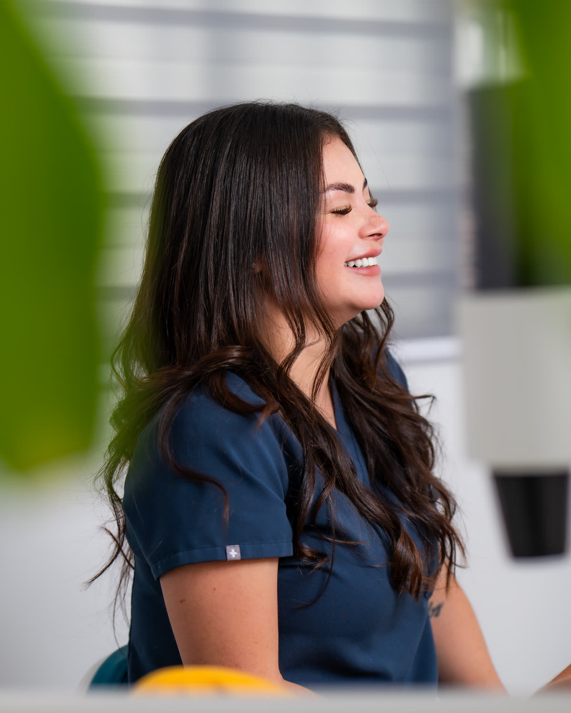
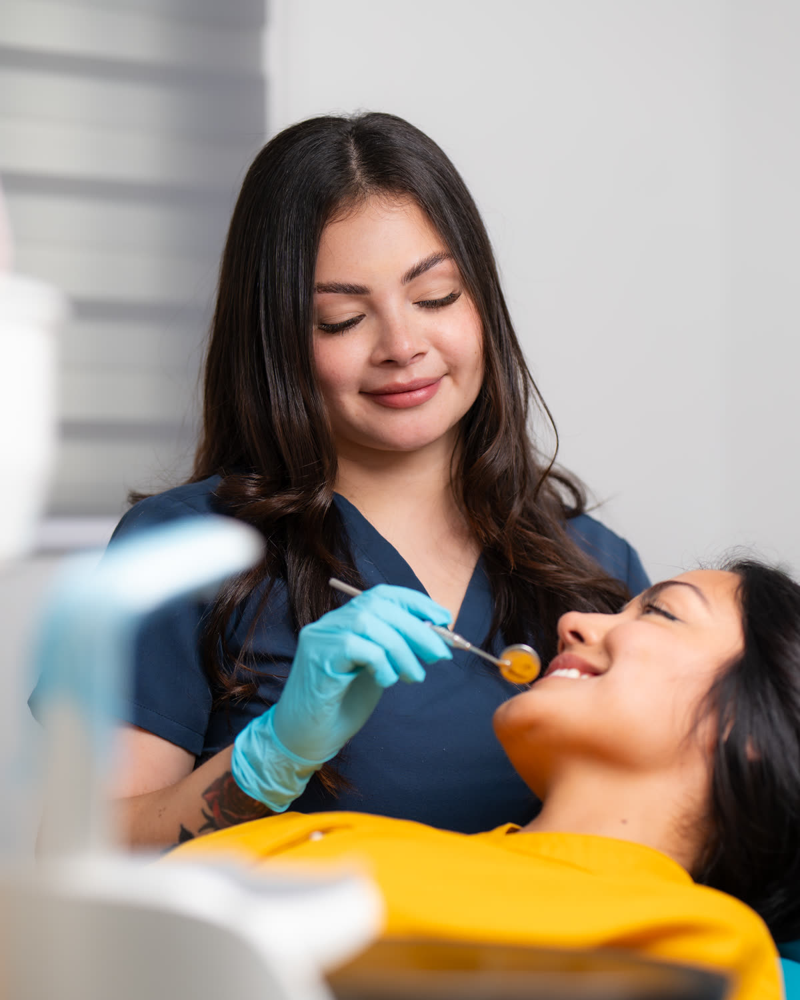

Llegas y conversamos
Antes de tocar nada, te escucho: qué te gusta de tu sonrisa, qué cambiarías y qué te preocupa.
DRA. CLARAValdez
Odontología estética · San José, Costa Rica
Tenía desgastes.
No quería dientes falsos.
Hoy sonríe sin pensarlo.
Soy la Dra. Clara Valdez. Antes de tocar un solo diente, te muestro cómo va a quedar. Baja y vive la consulta antes de agendarla.
Capítulo 01La primera cita
Baja despacio. El video avanza contigo.
Antes de tocar nada, te escucho: qué te gusta de tu sonrisa, qué cambiarías y qué te preocupa.
Con el escáner intraoral veo tu boca en 3D en minutos. Nada de pastas incómodas.
Diseñamos juntos. Ves cómo quedaría tu sonrisa antes de que empecemos cualquier tratamiento.
Qué haremos, en cuántas citas y con un presupuesto exacto. Sin sorpresas.
Capítulo 02Tratamientos
Pasa el cursor sobre cada video para verlo. Toca para escucharlo completo.
Láminas ultrafinas diseñadas a la medida de tu rostro. Corrijo forma, color y proporción cuidando tu diente natural.
¿Es para mí? →Alineadores removibles planificados en 3D. Ves cómo se moverá cada pieza antes del primer alineador.
¿Es para mí? →Sin desgastar tus dientes: añado en vez de quitar para mejorar forma, tamaño y color. Cambios sutiles, naturales.
¿Es para mí? →Cuando falta una pieza o hay que extraer una cordal: precisión quirúrgica y un trato que te tranquiliza.
¿Es para mí? →También te atiendo en blanqueamiento, limpieza, resinas, coronas, prótesis, férulas y emergencias dentales.
Capítulo 03Diseña tu sonrisa
No es un diagnóstico. Es una orientación para que llegues a tu valoración sabiendo qué preguntar.
Capítulo 04El cambio
La historia de un paciente
Te cuento su caso de principio a fin: qué buscaba, cómo lo diseñamos en digital y cómo quedaron sus carillas de porcelana. Es el mismo proceso que seguiría contigo.
“Una sonrisa bien diseñada no se nota. Se siente.”
— Dra. Clara Valdez
Casos de porcelana · explóralos
 Toca para ampliar
Toca para ampliar
Desliza el círculo dorado para ver el antes y el después.


“Excelente servicio, la Dra. Clara es un amor y no duele nada. La súper recomiendo.”
— Ivonne R. · Reseña verificada en HuliHealth


“Una doctora responsable, con conocimiento de lo que hace, delicada y amable. La recomiendo 100%.”
— Maryory G. · Reseña verificada en HuliHealth
Capítulo 05Mi clínica
Después de meses de trabajo abrí mi propia clínica en Plaza Mayor, Rohrmoser. La pensé amplia, luminosa y tranquila, para que desde que entras sepas que estás en buenas manos.


OpinionesLo que dicen mis pacientes
“Todo lo bueno que la gente dice de usted y lo que usted dice de usted misma es totalmente cierto. Y la cereza en el pastel: ‘cada milímetro en odonto cuenta’.”
— Carlos F. · HuliHealth
“Una experiencia 10 de 10. Espero que la doctora me ayude con su profesionalismo a tener la sonrisa que siempre he querido.”
— Keynier C. · HuliHealth
“Excelente atención, puntual y trato muy amable. Recomendada.”
— Edwin A. · HuliHealth
“Excelente trato de la doctora, consultorio muy agradable.”
— Hernando R. · HuliHealth
Capítulo 06Tu turno
Aquí ves mi disponibilidad real: elige el día y la hora que mejor te convenga y confirma en segundos. ¿Prefieres escribirme? Mi WhatsApp siempre está abierto.
No, no hacemos ningún tipo de desgaste. Sobre tu diente natural nosotros añadimos en vez de quitar, para mejorar la forma, el tamaño y el color.
Sí. El primer paso de un microdiseño es un blanqueamiento para mejorar el tono natural de tus dientes. En base a ese resultado elegimos la resina que vamos a colocar, para que siempre se proyecte un color blanco pero natural.
No. Nos enfocamos en hacer cambios sutiles, para que tu sonrisa se vea mucho más armoniosa y bonita, pero natural.
El precio varía según cuántas piezas vamos a trabajar y cuántas se muestran en tu sonrisa. Por eso lo mejor es que asistas a una valoración inicial: ahí te hago tu diseño digital y puedo darte un presupuesto exacto.